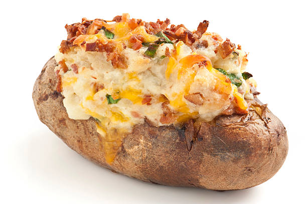

Baked Potato

Big ol juicy tater ferda
Russet Tater
1 Tbsp butter
1 cup shredded cheddar
Bake the tater at 350 degrees for 45 minutes (cover it in foil)
Cut a slit in the tater length-ways
Add butter and shredded cheddar to that biznitch